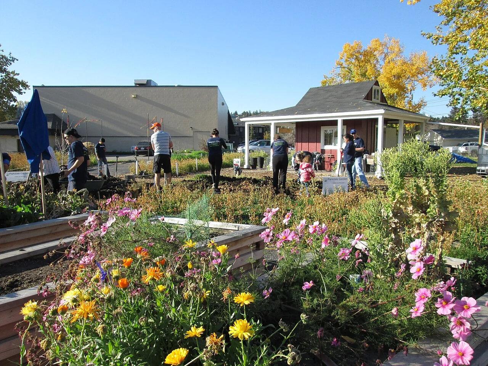

EDUCAÇÃO CIDADÃ · 12–18 ANOS
Seus direitos. Seus deveres. Seu lugar no mundo.
Entenda as leis sem complicação. Explore situações do dia a dia e descubra caminhos para participar da sociedade.
Sem cadastro. Sem ordem obrigatória.
APRENDER TAMBÉM É EXPLORAR
Uma pergunta. Novas possibilidades.
Por dentro da cidadania
Você escolhe a pergunta.
A gente ajuda a explorar o assunto.
ESCOLHA POR ONDE COMEÇAR
A cidadania está mais perto
do que você imagina.
Uma conversa em sala. Uma postagem. Uma compra. Cada situação abre uma nova pergunta.
Direitos e deveres
Entenda a diferença, conheça a história e reconheça exemplos no cotidiano.
Começar a explorarConheça as leis
Oito temas para descobrir como as leis se conectam com a sua vida.
Encontrar um temaQuem faz as leis?
Conheça os três Poderes e o caminho de uma proposta até virar lei.
Entender o processoComo usar seus direitos
Organize o que aconteceu e descubra onde buscar orientação e apoio.
Conhecer os caminhos
DA PERGUNTA À PARTICIPAÇÃO
Seu ponto de vista
faz parte da conversa.
Entender seus direitos ajuda a fazer perguntas, reconhecer injustiças e buscar apoio. Refletir sobre responsabilidades ajuda a conviver e a participar das decisões.
Direitos não são uma recompensa por bom comportamento: eles protegem as pessoas. O poder público e as instituições também têm responsabilidades.
Entender direitos e deveres →SEU PRÓXIMO PASSO
E se você colocasse suas ideias à prova?
Oito situações, oito perguntas. Aprenda também com cada resposta.